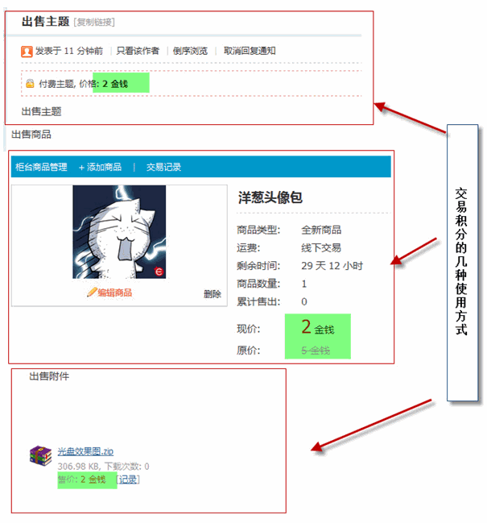

积分设置
每一个站点就像一个社会的缩影，在这个虚拟社会中，会员可以赚取金钱、获得威望、做出贡献，还可以参与主题和商品的购买，这些操作都需要通过积分来体现。积分在站点中的两大作用就是衡量用户级别和参与站内交易。另外，公平、合理的积分系统也能增加用户的荣誉感和积极性，站长灵活的运营和调整积分策略能偶很好的辅助社区运营，例如实现虚拟积分兑换实物礼品，鼓励用户活跃而增加积分；开通虚拟积分交易而促进用户互动等等。
一、积分衡量用户级别
站点中区分用户级别使用的是总积分，总积分是通过一定的计算公式得出的，其参与选项包括发帖数、主题数、精华帖数、用户总在线时间、好友数、记录数、日志数、相册数、投票数、分享数，以及各项扩展积分项。站长可以通过对这些选项进行“+ - * / ()”等运算，得出符合自身站点要求的总积分公式。
其中 posts 代表发帖数 (主题 + 回复数)；threads 代表用户发表的主题数；digestposts 代表精华帖数；oltime 代表用户总在线时间(小时)；friends 代表好友数；doings 代表发表的记录数；blogs 代表发表的日志数；albums 代表上传的相册数；polls 代表发表的投票数；sharings 代表发表的分享数；extcredits1～extcredits8 分别代表上述 8 个自定义积分。
Discuz! X 系统中内置了8种扩展积分，站长可以在【后台】=>【全局】=>【积分设置】 中，将其设置成金钱、威望、贡献、体力等体现会员不同方面的活跃性的选项，完全可以满足不同站点的积分项需要。
拥有了各项积分后，站点的会员就不再只是一个头像、一个名字这样单调了，可以是一个在站点中有金钱、有威望、有地位的人，形象也更加立体起来。例如：会员的虚拟财富可通过金钱来实现，会员的地位可通过威望来衡量，会员的积极性可通过贡献来体现。
二、积分作为虚拟货币流通
当扩展积分项被设置为交易积分后，用户就可以用这些积分来进行站点的虚拟物品或实体物品的交易，形成一套虚拟的货币流通机制。虚拟物品交易包括主题、附件的购买，悬赏、评分的给予，以及商品的交易等。
包括了积分转账使用的积分、主题(附件)买卖使用的积分、悬赏使用的积分、道具勋章买卖使用的积分、商品主题使用的积分、空间消费使用的积分、漫游应用使用的积分、回帖奖励使用的积分、用户举报奖惩使用的积分、创建群组消耗的积分这些都可以对积分进行消费，大大增加了积分的使用程度。
积分交易税：积分交易税(损失率)为用户在利用积分进行转让、兑换、买卖时扣除的税率，范围为 0～1 之间的浮点数，例如设置为 0.2，则用户在转换 100 个单位积分时，损失掉的积分为 20 个单位，0 为不损失。
转账最低余额：积分转账后要求用户所拥有的余额最小数值。利用此功能，你可以设置较大的余额限制，使积分小于这个数值的用户无法转账；也可以将余额限制设置为负数，使得转账在限额内可以透支。
兑换最低余额：积分兑换后要求用户所拥有的余额最小数值。利用此功能，你可以设置较大的余额限制，使积分小于这个数值的用户无法兑换；也可以将余额限制设置为负数，使得兑换在限额内可以透支。
单主题(附件)最高收入：设置单一主题(附件)出售作者所得的最高税后积分收入，超过此限制后购买者将仍然被扣除相应积分，但主题(附件)作者收益将不再上涨。本限制只在主题(附件)买卖时起作用，0 为不限制。
单主题(附件)最高出售时限(小时)：设置当主题(附件)被作者出售时，系统允许自主题(附件)发布时间起，其可出售的最长时间。超过此时间限制后将变为普通主题(附件)，阅读者无需支付积分购买，作者也将不再获得相应收益，以小时为单位，0 为不限制。
三、积分策略
有了所需要的积分后，对各项积分如何来设置其增减策略，对站长来说也是一件非常重要的事情。根据站点自身的需要，来对每一项积分制定恰当的增减策略，可以有效地建立起一套合理的站点积分体制。例如，以广场为主的站点，可以相应地增加会员发帖、回帖时所获得的积分值；而以会员的博客分享为主的站点，则可以相应地增加会员发表日志时所获得的积分。
每一项积分的增减规则可以由站点在“积分策略”中予以设定。由于 Discuz! X 的系统是结合了论坛、群组、家园、门户的一个统一的站点系统，所以会员在站点中的活动，无论是在论坛里发帖、回复，在群组里讨论，或是发表日志、图片、分享等，都可以在这里设置全站统一的积分策略。
编辑积分策略名称可以对该积分策略进行修改
特别要注意的是，如果在某个版块中单独设置了积分策略，那么版块中的增减策略优先级要高于全站积分策略。如下图中，版块的积分策略中，输入框中为本版的积分策略，旁边的括号中是全站积分策略中此项的设置，当两项数值不一致时，以版块设置为优先。
普通会员可以在【前台】=>【设置】=>【积分】=>【积分规则】中查看，如下图所示